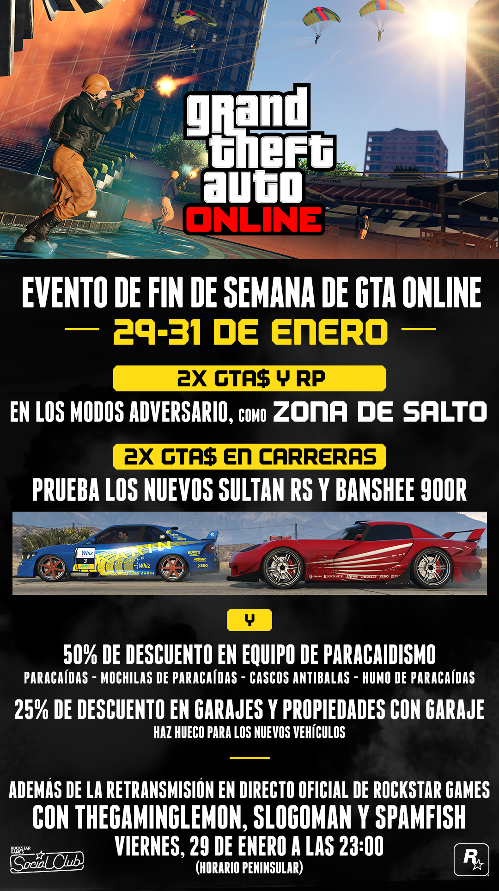

Promociones
DOBLE DE GTA$ Y RP EN TODOS LOS MODOS ADVERSARIO
Con el doble de GTA$ y RP en todos los modos Adversario, la velocidad terminal te aguarda en la frenética caída libre de Zona de salto. Hasta cuatro equipos de paracaidistas lucharán encarnizadamente por una oportunidad de hacerse con el control del territorio, sabiendo que la victoria en las zonas repletas de humo harán que su rango y su cuenta bancaria se engrosen espectacularmente.
LISTA DE PARTIDAS DEL EVENTO
Para que puedas ponerte manos a la obra de inmediato, basta con que pulses el botón del evento durante las pantallas de inicio este fin de semana. Aparecerás directamente en las listas de partidas del evento junto a otros competidores ansiosos y, si completas las tres actividades de la lista, ya ganes o pierdas, obtendrás una recompensa en forma de botín de bombas adhesivas, munición para subfusiles y granadas que podrás añadir a tu arsenal.
DOBLE DE GTA$ EN TODAS LAS CARRERAS
Si eres coleccionista de coches o adicto a la velocidad, ya tienes nuevos bugas con los que recorrer las calles de Los Santos. Los nuevos Karin Sultan y Bravado Banshee ya están disponibles en el sitio web de Benny's Original Motor Works, y se pueden mejorar a su versión de carrocería ancha en el local de Benny's, en Strawberry. Añade a esto una generosa ayuda del doble de GTA$ en todas las carreras, y prepárate para pasar un fin de semana de automovilismo de muerte.
DESCUENTO DEL 50% EN EL EQUIPO DE PARACAIDISTA
Y para que no te quedes con el culo al aire sin lo básico para la zona de salto, tienes un 50% de descuento en todo el equipo de paracaidismo este fin de semana. Haz acopio de paracaídas y humo para perfeccionar tus maniobras de aterrizaje en el modo Libre. Las bolsas de paracaídas y cascos antibalas también están disponibles a mitad de precio durante todo el fin de semana.
25% DE DESCUENTO EN TODOS LOS GARAJES
Haz espacio para los nuevos Sultan RS y Banshee 900R (o para cualquier vehículo adicional que estés pensando en añadir a tu colección) con una fantástica rebaja del 25% en todos los garajes. Si has estado mirando nuevos barrios con más espacio para tus preciados vehículos, ahora es el momento.
LA RETRANSMISIÓN EN DIRECTO OFICIAL DE ROCKSTAR GAMES
Hoy viernes 29 a las 23:00 (horario peninsular), entra en los canales oficiales de Rockstar Games de Twitch y YouTube, ya que el equipo del estudio de retransmisión de Rockstar contará con TheGamingLemon, Slogoman y Spamfish como invitados especiales para que jueguen al nuevo modo Adversario Zona de salto, corran con los nuevos Sultan RS y Banshee 900R por el sur de San Andreas y mucho más. No pierdas de vista Twitter para tener la oportunidad de participar y unirte a la sala de juego de la retransmisión y síguenos por YouTube y Twitch, o suscríbete ya a los canales que tenemos en ellos para que te notifiquemos cuándo empieza la transmisión.